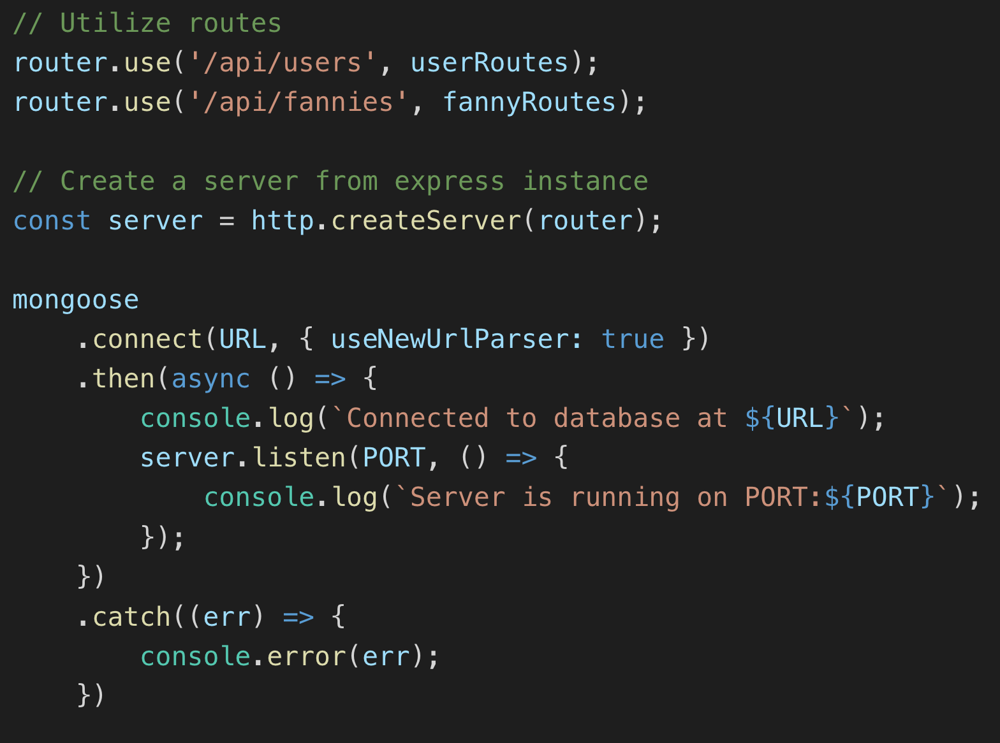
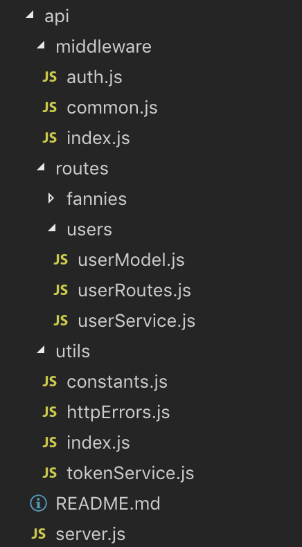
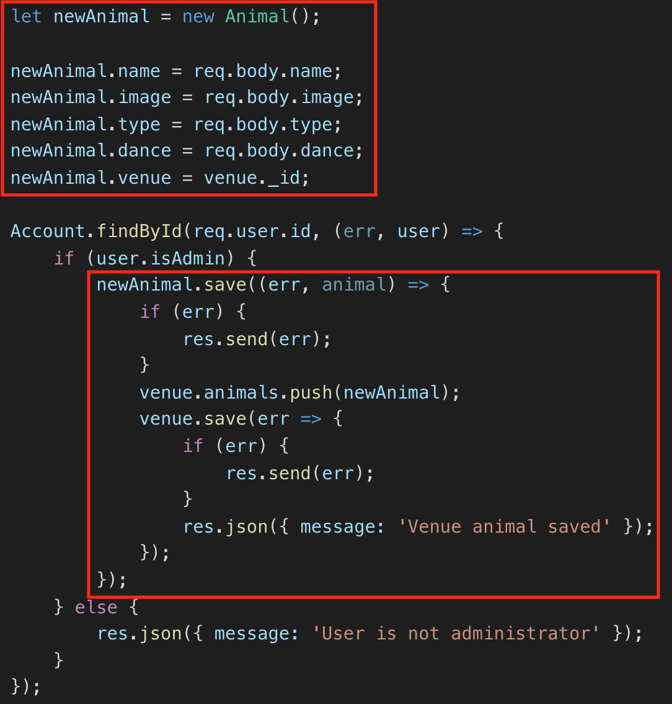
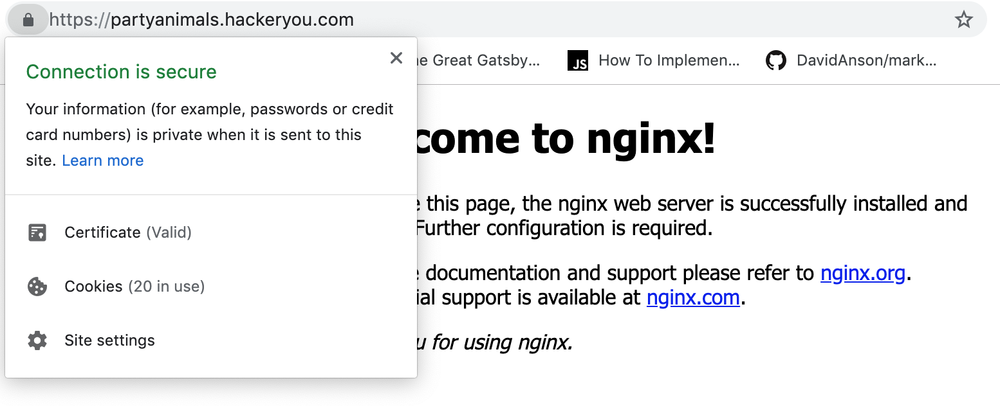

Welcome to Mark n' Munch
We are going to learn about making your own API for teaching purposes
Our goal is to learn about building a scaleable and descriptive API that is accurately representative of APIs students may experience in the wild.
Tools
NodeJS
Node allows us to run JavaScript on the server. Node allows us to run our API, communicate with our database, and complete build related tasks.
MongoDB
This is a popular and great choice for your database since data is organized into JSON documents, which interacts nicely with our full JavaScript stack.
Mongoose
Mongoose is utilized for our connection between Node and MongoDB. Known as an Object Data Modelling Library (ODM). In addition, within our server file, mongoose is used to establish the connection to our database. It includes built-in type casting, validation, query building, business logic hooks, and more, out of the box.
JWT
This is a module that we can use to generate a randomized token for us. It also gives us some handy token validation methods.
Express
This allows us to simplify our routing, and provides immensely helpful methods to keep our HTTP requests simplified and clean.
Why Do It?
Control
Relying on other people's APIs when teaching is tough. If the API goes down, someone is having trouble getting their API key, or other problems arise, we are at the mercy of the API.
With our own API, we can generate back up tokens, respond faster if the API goes down, develop the API to meet the course's exact needs, and more!
Style points
It makes us look cool.

Getting Started
I like to visualize how everything works by going through the whole flow of information from the front end to the back end and then bringing it back again.

Front - Login.js

Back - userRoutes.js
Back - userService.js
Back - userModel.js

Back - tokenService.js
Back - userRoutes.js
Front - Login.js

Routes vs. Middleware vs. Utils
Routes
This will hold the information specifying what happens when the endpoints of our API are hit.
Node without Express


Middleware
Middleware are functions that have access to the request object (req), response object (res), and the next function. Middleware functions can execute any code, make changes to request and response objects, end the request-response cycle, and call the next middleware in the stack.


Auth Middleware Example
Utils
This will hold our helper functions, as well as any constants that are required in our application.
Routes: Models and Services
Models
This is where we set up our schema. This maps to the way our information is stored in our database.
Services
This will contain helper functions that we can use within our routes to perform important actions and reduce code repetition.
Server.js
This is like the package.json file of the backend
This serves as the entry point for our API. Within here, we will set up configurations, link the various segments of our API, and start the server and connection to our database.
Back - server.js
Sample folder structure of API
Databases
Thinking about database structure and how our collections relate will help us structure our code!
For example, a party venue can have multiple attendees, but each attendee is only at one venue at any given time.
Database Relationships
It's important to understand how different collections relate to one another, even if the proper terminology isn't used to describe these relationships.
Venue collection

Animal collection
Sample New Animal Creation
Gotchas
The biggest gotcha I personally experienced was dealing with authentication through email verification.
The same token that your users get when creating an account cannot be used to lock down routes that create a new entry in the database.
I had never completed any email validation before so figuring out that flow was super confusing for me.
Sendgrid Email Validation
Confirmation Route
User entity
isAdmin validation
Deployment
I found no enjoyment in this part of the process.
High Level Steps:
1. Create a new Ubuntu droplet within the HackerYou project on Digital Ocean.
2. SSH onto the remote server (Digital Ocean will provide you with the IP after set up).
3. Get Nginx and Node.js installed onto the remote server.
- Nginx is one of the most popular web servers in the world. Load balances our traffic for us.
4. Get PM2 installed.
- PM2 is a production process manager for Node applications that allows you to keep applications alive forever.
package.json

5. Git your codebase onto the remote server.
6. Use PM2 to start up your application.
From HTTP to HTTPS:
We use something called Let's Encrypt which is a certificate authority that provides an easy way to obtain and install free TLS/SSL certificates letting us have some encrypted HTTPS on the server.
It provides us with a software client called Certbot.
High Level Steps:
1. Install Certbot on remote server.
2. Adjust firewall to allow for HTTPS traffic.
3. Generate the SSL certificate.
4. Do a renewal dry run so that you know the certication will renew when the time comes.
5. Go to the URL of the server and you should see a lock to the left of the URL.
Updating
How do we make changes to the API once it has been deployed and if people are using it?
The flow
Really a lot of SSH-ing to a remote server.
Make a separate user on the remotely deployed server called apiuser. This user has a clone of the code base meaning that the updated code can be pulled from GIT.
Run an npm build && npm start which compiles all our files into the dist directory and then uses pm2 to run.
Extra Resources
- Check out the new Full Stack code along here
- Check out Party Animals backend here
- Notes on deploying Node.js to an Ubuntu droplet here
- Notes on getting Let's Encrypt on Ubuntu droplet here
- Helpful tutorial on adding email verification to a Node app here